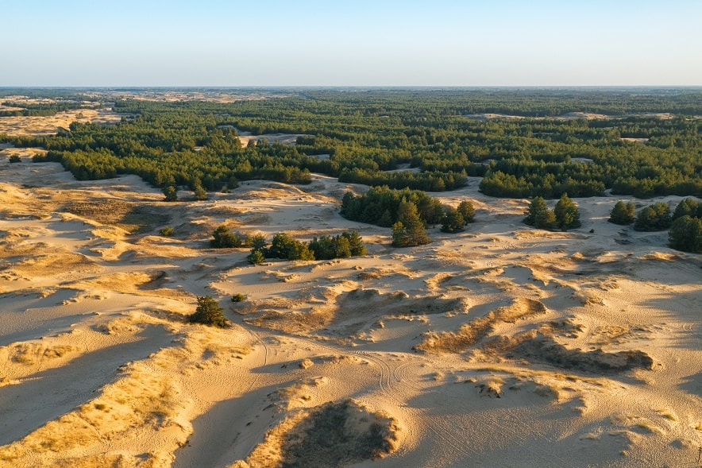

Унікальна флора та фауна
Олешівські піски охоплюють площу близько 70 квадратних кілометрів і складаються з піщаних дюн, сухих озер та рідкісної рослинності. Цей унікальний ландшафт виник в результаті вітрової діяльності протягом тисяч років. Піски характеризуються рухомими дюнами, що надає їм постійно змінюючийся вигляд та створює особливу атмосферу місця.
Олешівські піски відомі своєю унікальною флорою та фауною. Тут можна зустріти багато рідкісних рослин, які адаптувалися до екстремальних умов пустелі. Наприклад, величезний дуб "Папа" віком близько 500 років вважається символом Олешівських пісків. Також тут можна зустріти різноманітних комах, птахів, рептилій та деяких видів маленьких ссавців, які пристосувалися до життя в пустелі.
Природний заповідник та туристичний об'єкт
Олешівські піски мають велике значення як природний заповідник та туристичний об'єкт. Їх відвідують туристи з різних куточків країни та навіть з-за кордону, щоб насолодитись унікальною природою та спостерігати за пустельними пейзажами. Місцеві організують екскурсії, піші та велосипедні прогулянки, що дозволяють ближче познайомитися з цим природним чудом. Крім того, Олешівські піски є популярним місцем для відпочинку, пікніків та кемпінгу.
Збереження біорізноманіття та природних ресурсів
Значення Олешівських пісків не обмежується лише природно-рекреаційним аспектом. Цей регіон також відіграє важливу роль у збереженні біорізноманіття та природних ресурсів. Уряд України та місцеві організації активно займаються охороною цієї природної території та сприяють збереженню унікальних видів рослин та тварин.

-
Повернутися на головну сторінку